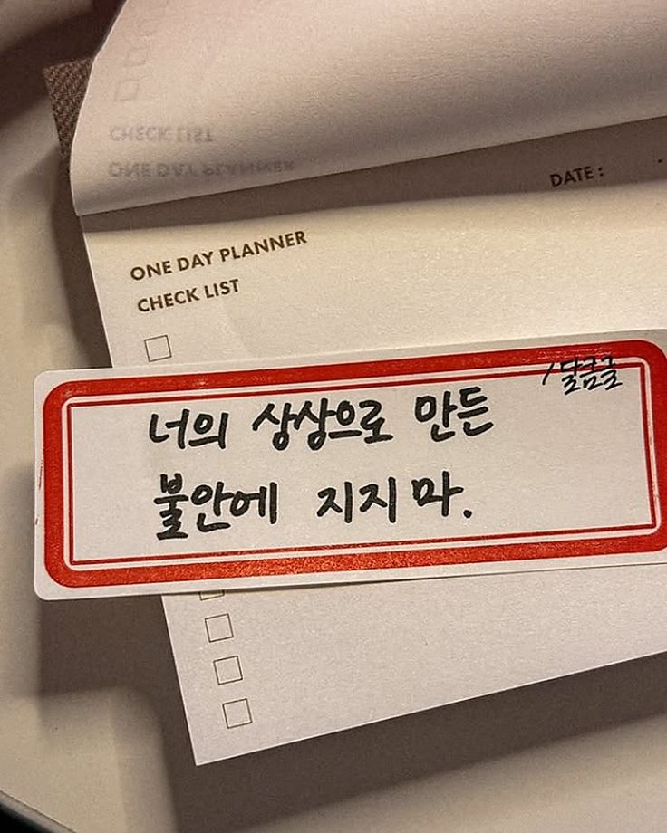

MOOD:LOG

기록은 마음을
정돈하는 가장 품위 있는 방법입니다.
대전 둔산동 ｜ 기록 공동체
Digital Log-off, Mind Tuning
우리는 매일 수만 줄의 데이터를 처리하며 살아갑니다.
때로는 과부하된 일상을 멈추고, 내면의 로그(Log)를 살펴봐야 합니다.
무드로그는 단순히 글을 쓰는 모임이 아닙니다.
엉킨 감정의 실타래를 한 줄씩 풀어내어, 당신이라는 존재를 가장 평온한 상태로 조율(Tuning)하는 **정성스러운 갈무리의 과정**입니다.
우리의 활동
01
감정의 언어 찾기
정의되지 않은 채 떠도는 마음을 단어로 붙잡습니다. 나만의 감정 사전을 만드는 첫걸음입니다.
02
무음의 몰입
스마트폰은 잠시 로그아웃. 백색소음과 사각거리는 연필 소리만이 가득한 공간에서 나에게 집중합니다.
03
오감의 위로
종이의 질감, 잉크의 향기, 그리고 정갈하게 준비된 차 한 잔이 당신의 감각을 부드럽게 깨웁니다.
04
감정의 시각화
완성된 기록을 실링 왁스로 봉인합니다. 오늘의 평온함을 물리적인 질감으로 간직하는 의식입니다.

나를 기록하는 것은
방황하는 내 마음의 닻을 내리는 일이다.
방황하는 내 마음의 닻을 내리는 일이다.
- LOCATION
- 대전 서구 둔산동 프라이빗 공간 (상세 위치 개별 안내)
- SCHEDULE
- 매주 토요일 오후 3시 (정기 모임)
- MEMBERSHIP
- 한 타임당 4~6명의 소수 정예 운영